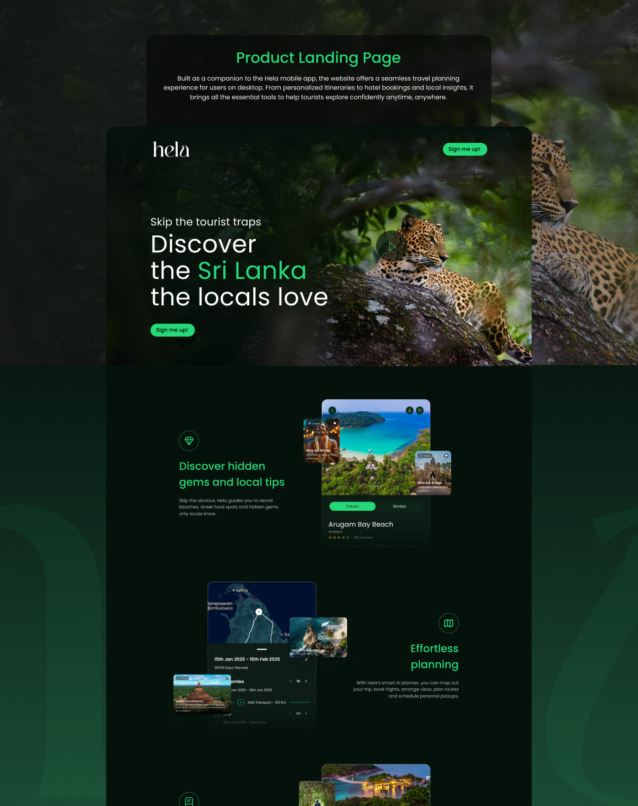
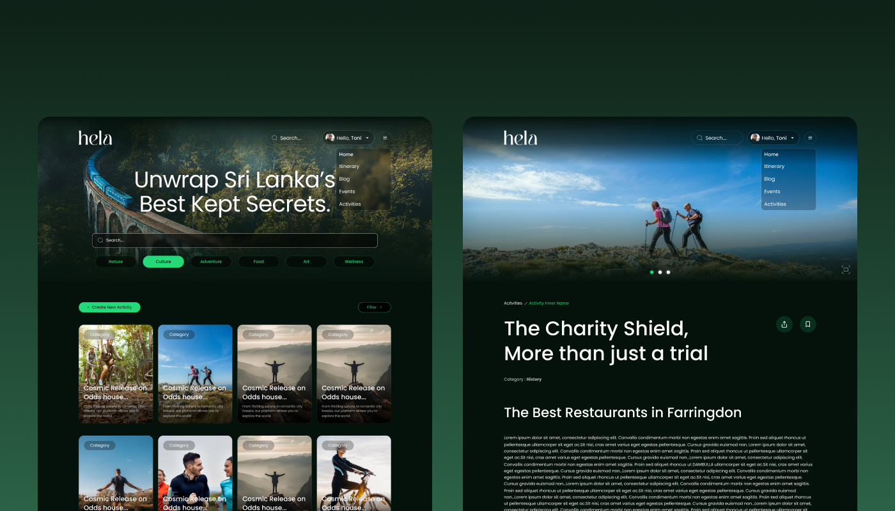
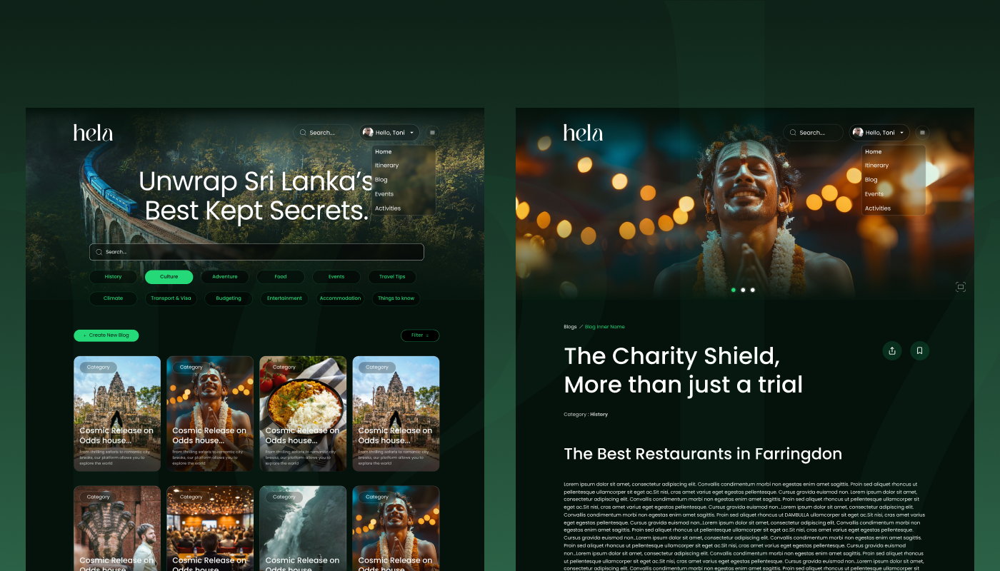
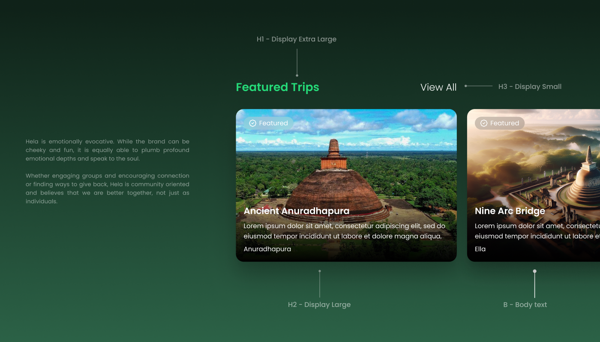
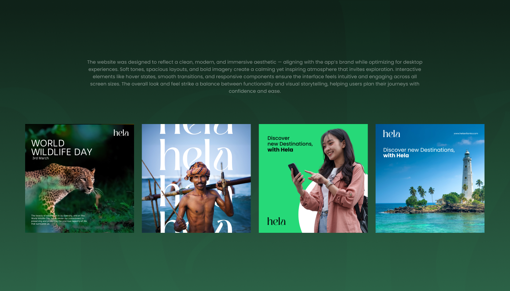
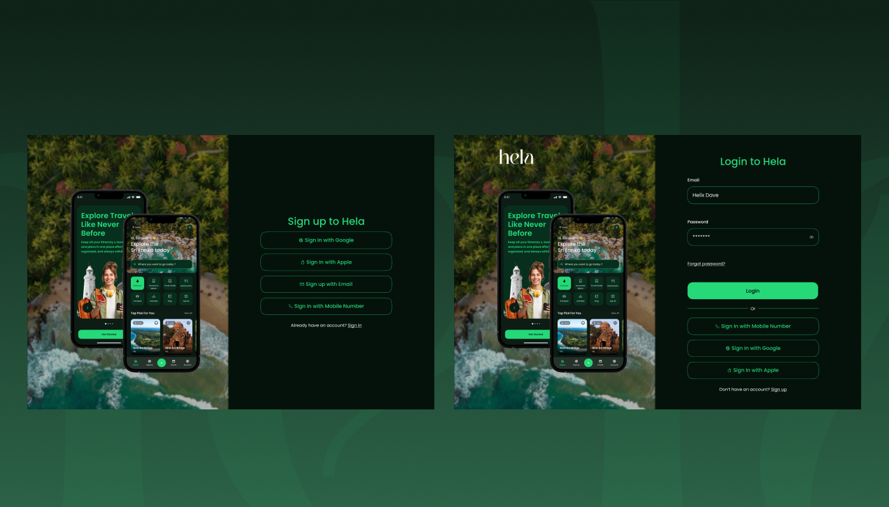
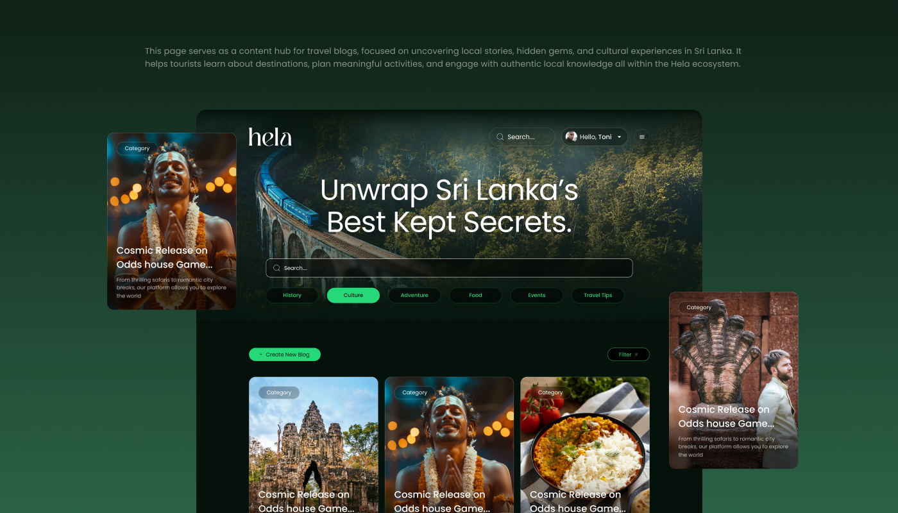
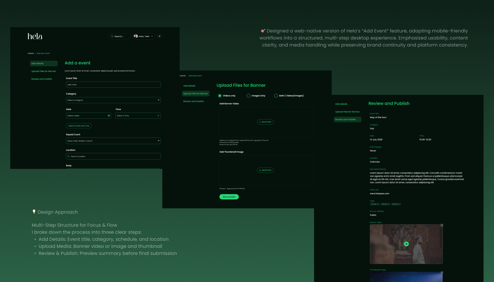
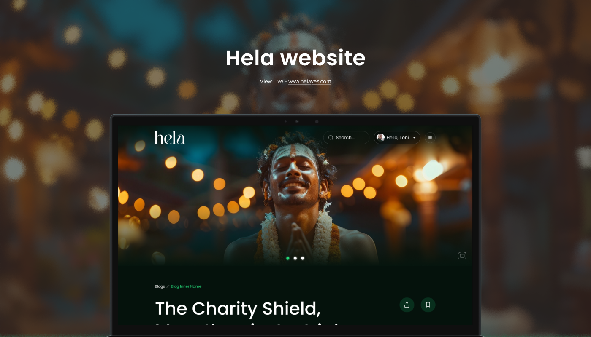

Hela Website Experience

Extending Hela to the Web version
While Hela was originally conceived as a mobile first solution, I recognized early on that many users – especially planners and frequent travelers often begin their journey on desktop devices. To support this behavior, I designed a responsive website version of Hela that complemented the mobile app and provided flexibility for users to switch between platforms without friction.
In the initial mapping stage, I made a strategic decision to only enable access to the Travel Guide and Travel Blogs sections, alongside a dedicated product landing page. This allowed us to:
- Focus development on the most content-heavy, research-driven parts of the experience
- Cater to early users looking to explore destinations before committing to the app
- Drive awareness and downloads via a clear, conversion-focused landing page
This phased rollout also helped validate desktop demand without overextending resources during the early build phase.

Why Build a Web Version?
Through early user research and persona development we identified two key user behaviours:
- Pre-trip planning often happens on desktop — Users preferred larger screens when comparing destinations, reading blogs, and managing itineraries.
- Real-time navigation and bookings shift to mobile — Once on the go, users relied on their phones.
To address this, the website was designed not as a simple mirror of the mobile app, but as a companion platform optimized for browsing, planning, and booking — while maintaining full feature parity and design consistency with the mobile version.
Process
1. Cross-Platform Alignment
I began by mapping out shared user flows between mobile and web. Key journeys like itinerary creation, hotel booking, and exploring local content were prioritized for parity. The challenge was maintaining coherence while optimizing for distinct behaviours across screen sizes.


2. Responsive Design System
Using the mobile design system as a foundation, I extended the visual language to accommodate responsive breakpoints. Components were adapted for desktop interactions including wider layouts, persistent sidebars, and hover states without compromising on clarity or usability.
3. Adaptive User Flow Design
Certain flows were redesigned specifically for desktop ergonomics. For example:
- Itinerary planning featured a split-screen view with drag and drop support
- Search and discovery offered advanced filters and map integration
- Blog reading was enhanced with distraction-free layouts and related content suggestions
4. Consistent Visual Identity
I ensured branding, tone, and visual hierarchy remained consistent across platforms. By reusing core assets and adapting components responsibly, the transition between mobile and desktop felt natural and connected.

5. Look and feel
The website was designed to reflect a clean, modern, and immersive aesthetic — aligning with the app's brand while optimizing for desktop experiences. Soft tones, spacious layouts, and bold imagery create a calming yet inspiring atmosphere that invites exploration. Interactive elements like hover states, smooth transitions, and responsive components ensure the interface feels intuitive and engaging across all screen sizes. The overall look and feel strike a balance between functionality and visual storytelling, helping users plan their journeys with confidence and ease.

6. Developer Collaboration & Handoff
I created high-fidelity desktop prototypes in Figma and worked closely with the dev team to ensure responsive behaviour and accessibility standards were met. I also provided annotations for layout breakpoints, keyboard interactions, and mobile-to-web sync behaviour.



